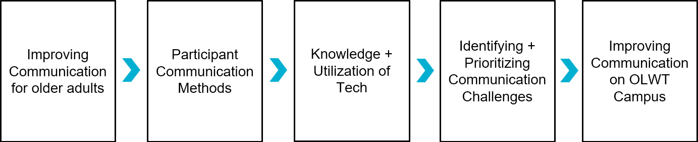
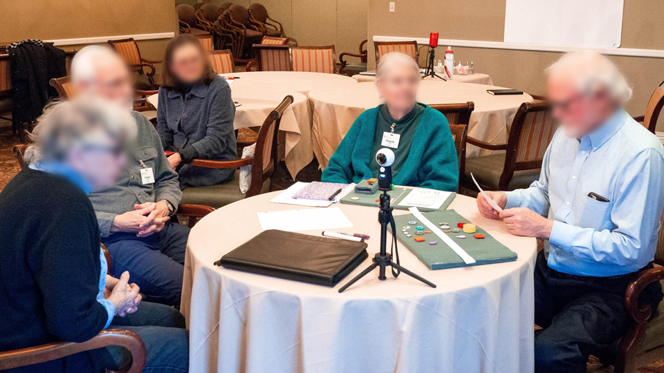
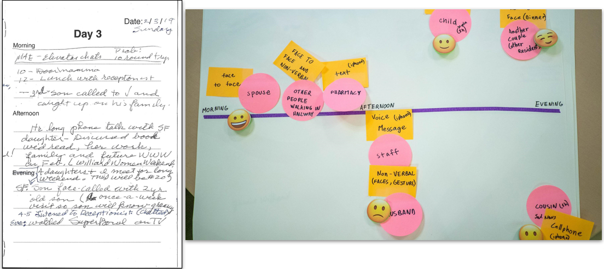
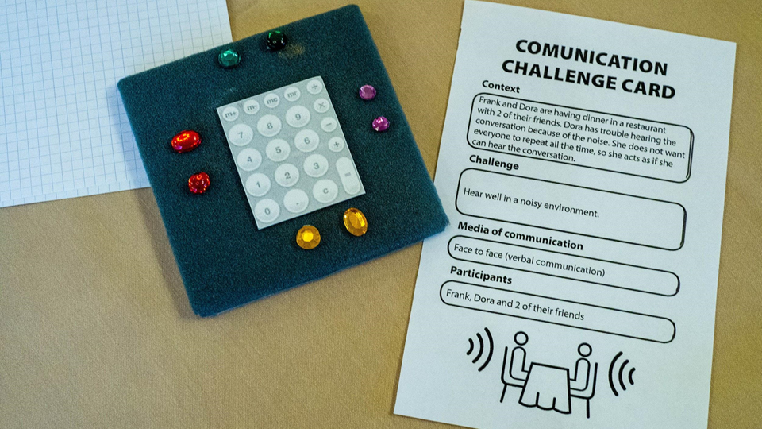
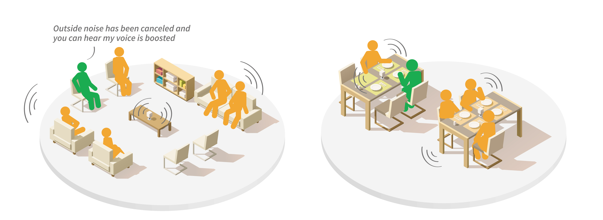
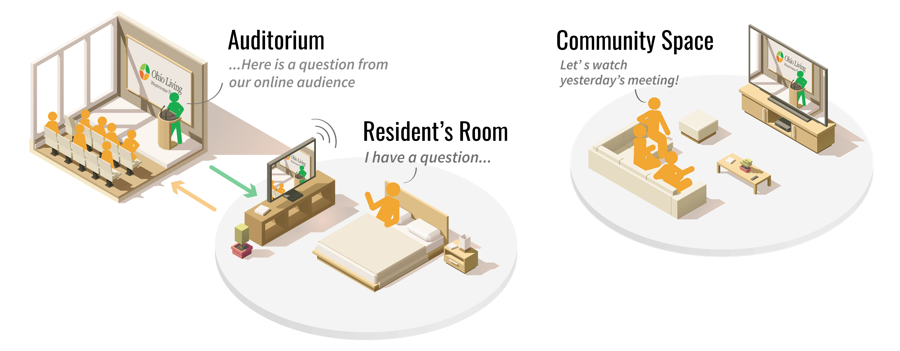
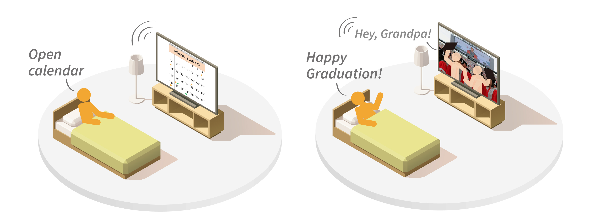
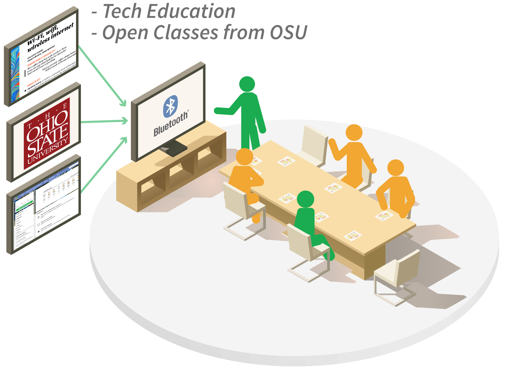

Codesigning
with Older Adults
To make them part of the conversation!

Summary
This project started from a collaboration with Ohio Living Westminster-Thurber (OLWT). They are an older adult’s community that offers independent senior living apartments, assisted living, memory care, long-term nursing care, and short-term rehabilitation. The main objective was to organize weekly codesign activities with a group of older adults to make them discuss about “communication” problems they can have at OLWT and to create solutions. With the participation of the older adults, the design team proposed a list of recommendations to improve communication throughout the community.
My Role
Leading weekly codesign activities with older adults, analyzing the results, preparing weekly presentations, designing the documents and tools necessary for the activities
Tools
Photoshop, Illustrator, InDesign, Lightroom, Google Workspace
Project Process
The original purpose of this project was quite broad. The goal was simply to discuss with a group of older adults what communication problems they may have and what they would like to improve. By working as a team, the designers and the participants, looked at the daily communications habits of the residents of OLWT, their routine, who they interact with and in what context. Then, the designers questioned the participants to understand which technologies they use, know about and/or are curious to learn more about (e.g., laptops, smartphones, smart assistants, emerging technologies, etc.).
Through these discussions, the designers and the participants highlighted various communication challenges. For example, some older people have hearing difficulties. They may also have mobility issues and sometimes feel isolated from the rest of the community. In the end, the team proposed to develop an interconnected system to improve communication on the OLWT campus.

Weekly codesign activities
In this project, the team met on a weekly basis where the designers facilitated codesign activities to address various themes, to help understand the participants' realities and to attempt to develop concepts. Some of these codesign activities took the form of timelines to be completed, workbook to be filled out or problems to be solved creating by "magic" tools.



Objectives
Based on the findings from the codesign sessions, the team identified 3 primary goals for all OLWT residents.
- Increase sense of independence.
- Improve daily interactions for those with hearing problems.
- Combat loneliness, hopelessness, and boredom.
List of priorities
By continuing to work with residents on these goals, a priority list was then developed to address the various communication issues residents face.
- Hearing – If residents have trouble listening, they can no longer communicate with each other and can quickly feel isolated.
- Campus TV – OLWT offers many activities to residents, but they sometimes have difficulty accessing them for mobility or hearing reasons. It is therefore important to facilitate the accessibility to all activities.
- Digital Calendar – The events calendar is currently distributed through paper brochures. Many residents would also like to have access to a digital version for easy reminders.
- Smart Tech – Technology continues to develop at a rapid pace, and some residents are struggling to keep up with it after leaving the workplace. They would like to have access to new technologies that would make their day-to-day lives easier and also access to courses to learn more about them.
Improving communication at OLWT
Hearing
Finding solutions to limit hearing problems must be the number one priority on campus. Using noise reduction technologies in complement to hearing aids to enhance the voice of the person who is speaking could improve the ability to communicate and discuss in public areas. 
Interactive Campus TV Channel
Attending live events can be difficult or even impossible for some residents. Therefore, implementing an interactive campus TV channel could be a great way to remedy this problem. Such platform would allow all residents to view live of previously recorded events, and it would allow residents who mobility difficulties to enjoy and participate in meetings, lectures, music events and other group activities offered on campus. 
Digital Calendar
Moving from a physical calendar to a digital one would allow all residents to access events from their smartphones, tablets or even televisions. In addition, it would also be possible to use the calendar to plan and remotely join activities in or out of the community.
Smart Technologies
 Implementing smart technologies like Alexa (Amazon), Google Assistant and Siri (Apple) could help residents be more connected to the community. These technologies could remind residents when their appointments are and the next events they are interested in. They could also allow them to quickly access the latest news on campus, and control the lights, temperature, and electronics in their apartments. Classes about these technologies and other topics that interest the residents could also be offered on campus.